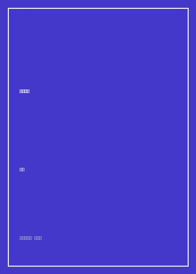

春秋来信

8.7
★★★★★
豆瓣评分 · 3,210 人评价
北岛流亡海外时期的诗歌里程碑，以锋利如铁的冷峻短章，在异乡雪野与时间的裂缝中重铸当代汉语的坚硬风骨。
总体观点
北岛的《春秋来信》是二十世纪末中国现代诗歌史上的一座巍峨孤峰。在告别了早年《回答》《宣告》时期带有强烈广场演讲色彩与集体英雄主义的朦胧诗风后，北岛在海外漂泊流亡的孤独岁月中，完成了诗歌美学的深沉嬗变——语言变得更加内敛、坚硬、晦涩而充满金属质感。
全书以同名长诗《春秋来信》为轴心，收录了作者漂泊欧洲、北美期间创作的五十余首力作。北岛将流亡者切肤的文化断裂感、对故土亲人的彻骨思念以及对现代极权与消费文明异化的冷峻审视，全部锻压进短促如刀削的诗行中。他向世界证明：即使失去了祖国与故土的现实土壤，母语本身也可以成为流亡诗人最不可摧毁的精神避难所。
核心观点
-
1. 母语是流亡诗人随身携带的唯一真正祖国
当现实的地理家园被连根拔起，诗人通过在异乡日复一日锻打汉语词句，构筑起抵御虚无风暴的精神堡垒。
北岛在北欧寒冷的异国公寓中伏案疾书：“我在这世界上/只有一个同胞/那就是我所写的汉字”，道出语言与存在的生死一体。 -
2. 告别广场修辞，走向金属般冷峻坚硬的短章微雕
剔除滥情的感叹号与政治抒情口号，代之以高密度的名词碰撞、隐喻错位与冰冷的超现实意象。
在《独唱》《背景》等诗中，使用“玻璃的钟声”“生锈的锁”“带血的钥匙”等凝重意象，呈现痛彻心扉却绝不嚎啕的尊严。 -
3. 时间裂隙与历史废墟上的形而上沉思
春秋代序、岁月流转，个体在庞大而荒谬的历史车轮前渺小如尘埃，唯有坚硬的诗性能够穿透遗忘的铁幕。
《春秋来信》中将春秋战国的历史烽火与二十世纪风云跌宕交叠映射，在历史的空旷长廊中向未来发出穿透岁月的警示之声。 -
4. 异乡漂泊中的冷眼旁观与双重异化体验
既无法回归故土，又拒绝被西方消费主义的浮华体制所收买，流亡者始终保持着边缘人的清醒与反叛姿态。
在漫步纽约或巴黎的街头诗作中，北岛以解剖刀般的笔触描绘霓虹灯下的机械行人，揭示资本主义物欲繁华背后的精神荒原。 -
5. 在沉默与留白中引爆诗意的巨大张力
短促的行间跨度与大面积的版面留白，迫使读者在字与字的断裂处调动生命体验去填补未言之意。
诗行往往戛然而止于一个冷酷的意象上，如同钟摆骤停，留给读者的是震耳欲聋的思想空白与余震。
全书结构
-
第一辑 晨钟与暮鼓：异乡漂泊的序曲
记录流亡初期辗转欧洲各国的失重感，在冰雪与语言隔阂中寻找诗性锚点。
精读《晨钟》《过冬》，在北欧清冷的空气中聆听大教堂钟声敲击流浪者单薄胸膛的孤寂震颤。 -
第二辑 独唱：坚硬短章与语言避难所
全面确立冷峻短章风格，以高度凝练的意象群重构个人精神宇宙与汉语防线。
研读《独唱》《夜巡》，感受词语如石块投入深潭般激起的层层深沉回响。 -
第三辑 背景：历史创伤与废墟碑铭
深入审视二十世纪的风云激荡与个体的流血牺牲，为动荡时代留下不被磨灭的纸上证词。
在《背景》《悼亡》中剖析诗人对逝去战友与岁月的深沉哀思，展现硬汉内心的柔情与痛楚。 -
第四辑 寓言：文明异化与现代性审判
将笔触延伸至现代工业社会、消费狂潮与科技牢笼，发出具有普世价值的警世格言。
细品《寓言》《画廊》，透视现代人在高楼大厦中迷失灵魂的虚无图景。 -
第五辑 春秋来信：寄往岁月的终极长歌
全书压轴同名长诗，熔铸东方古典历史沧桑与现代存在主义哲思，达成诗艺集大成。
全景通读《春秋来信》，跟随诗人的目光跨越千山万水与千年岁月，完成对民族命运与诗歌天职的庄严答卷。